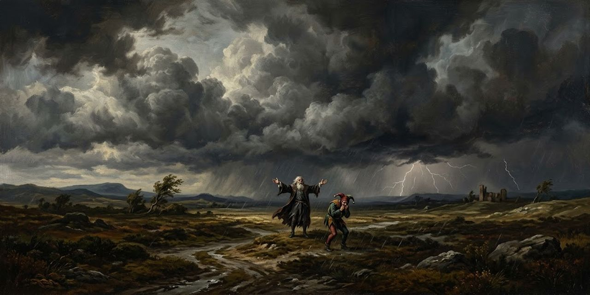

Nube en 3D del Rey Lear

William Shakespeare · 2.591 frases, un punto cada una.
0 · cerca del centro1 · lejos del centro
Distancia normalizada: rojo (0), azul (1).
Arrastra para girar; con dos dedos, pellizca para acercar y mueve para desplazar (o ✥). Toca un punto para leerlo.
Corpus
Ranking
Nube
Corpus recorre las frases en el orden de la obra; Ranking las ordena por cercanía al centro de los vectores completos; Nube, por cercanía al centro de los puntos del dibujo. Ambos centros son de la obra entera, también al ver una sola escena. La distancia va de 0 (más cerca) a 1 (más lejos), normalizada por modelo respecto a la obra entera. El color sigue la distancia del ranking y compara frases dentro de un modelo, no entre modelos.